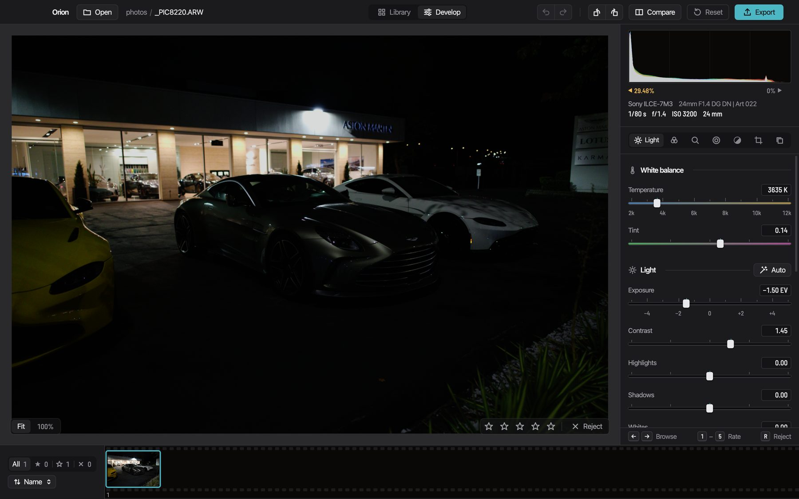
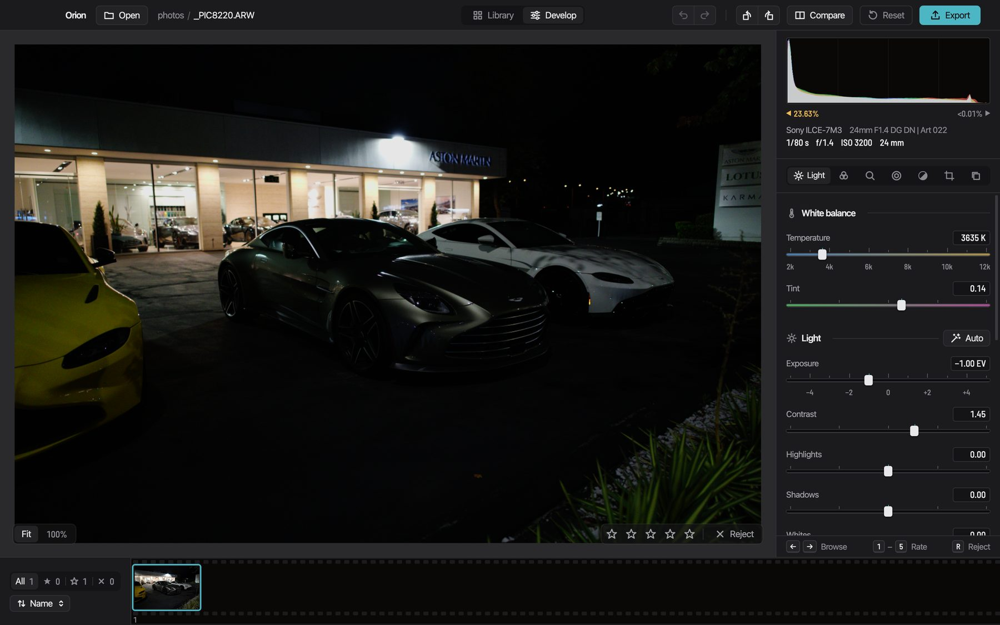
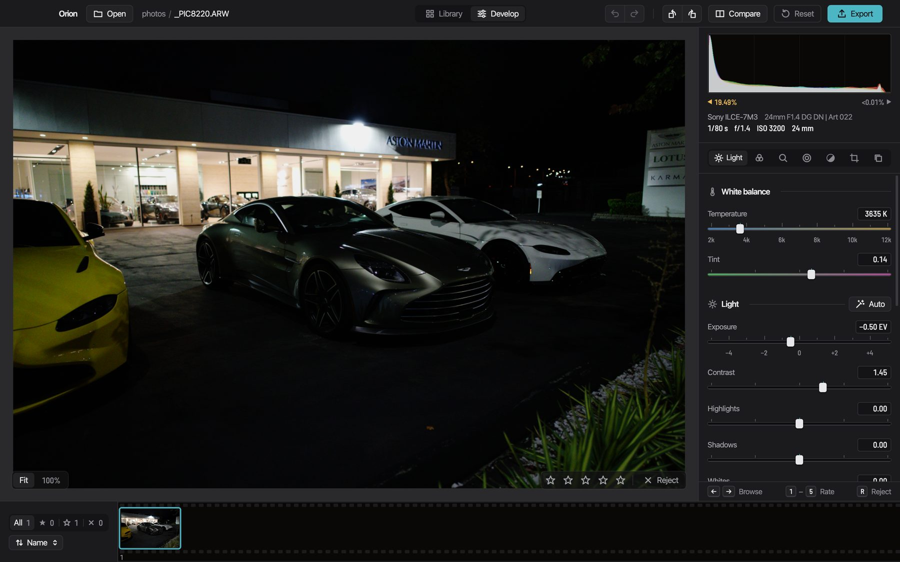
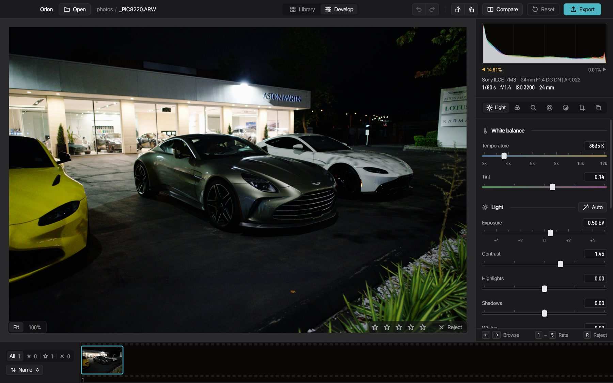
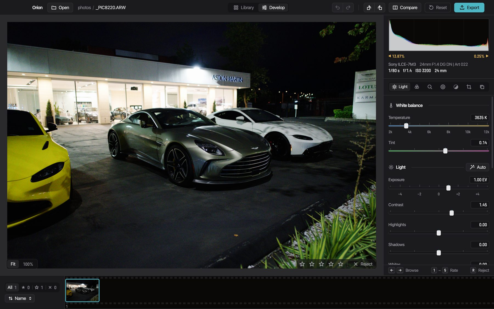
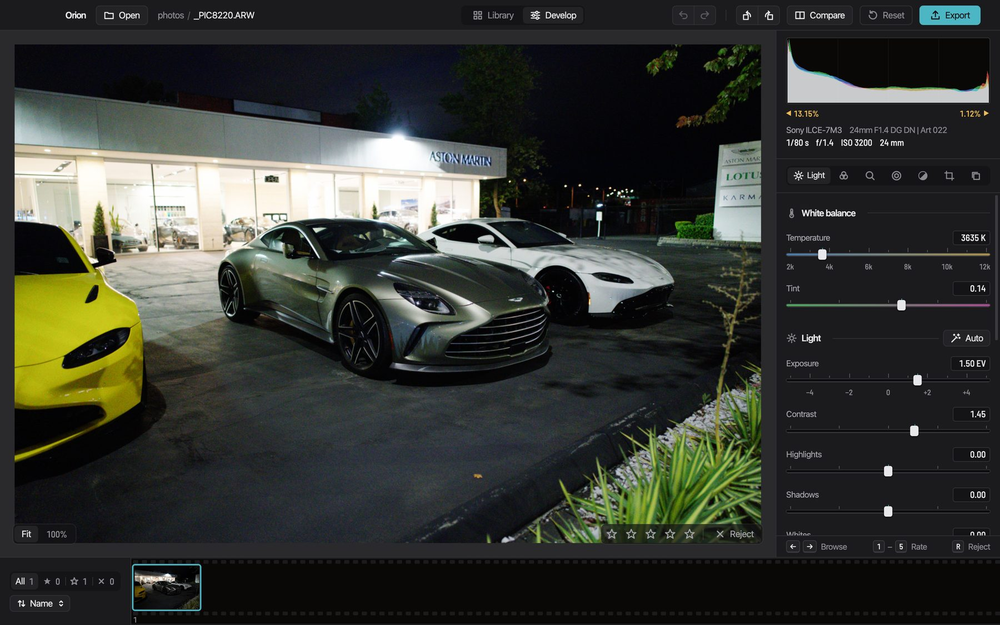
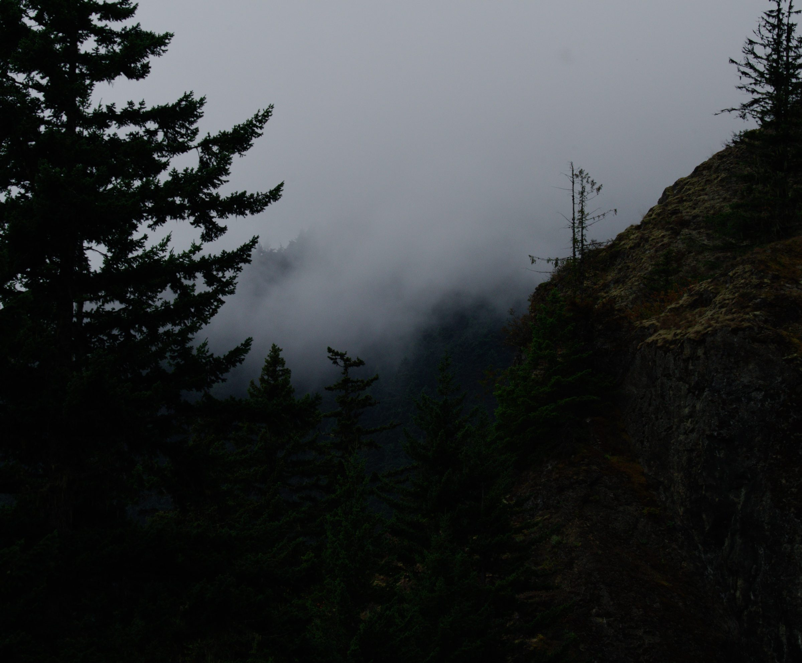
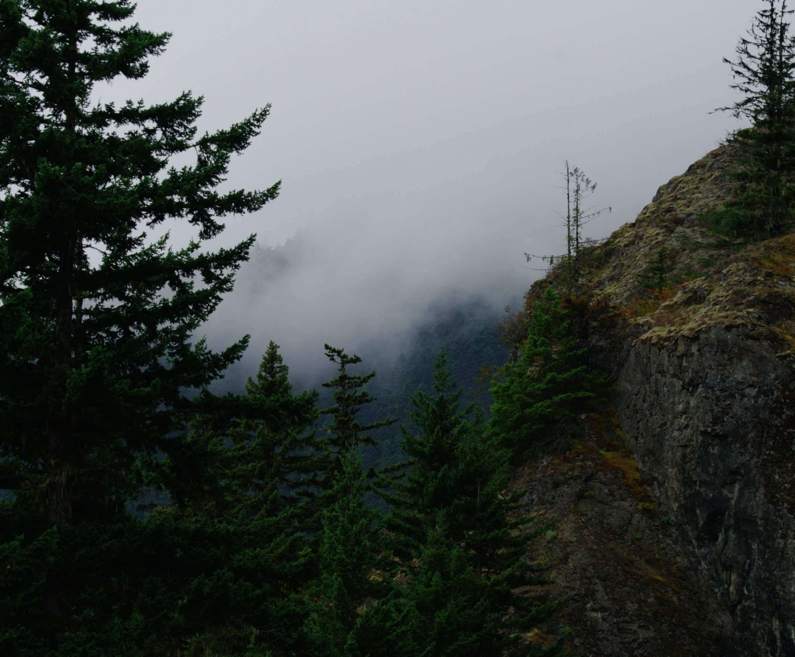
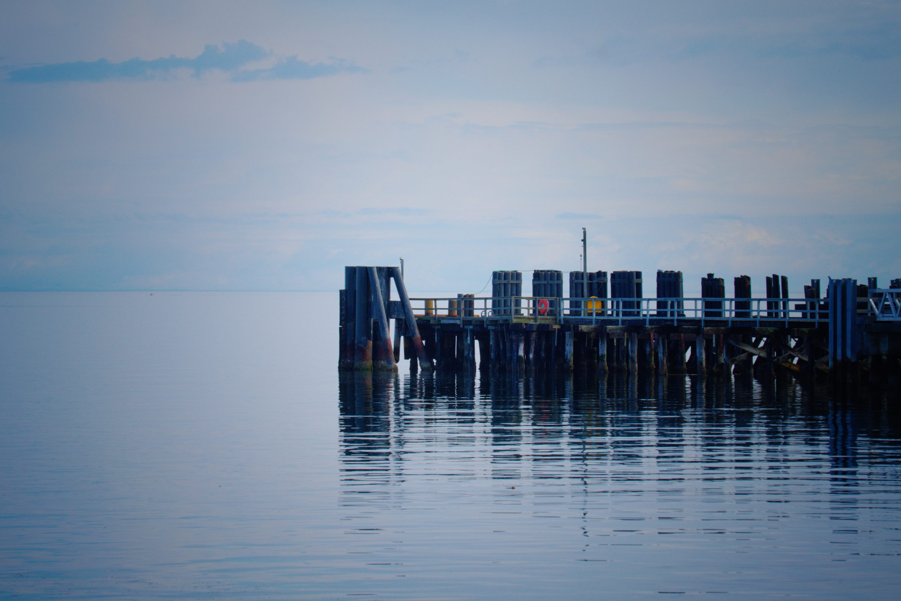

Fast RAW editing for free
The RAW editor for Apple silicon Macs that keeps up with you: every slider move under 20 ms, your originals untouched. No subscription, no account.
Download for MacmacOS 14 or later · Apple silicon · Alpha






Exposure
- <20 msper slider move, 42 MP raw, MacBook Air M4
- 1,558lenses corrected
- 2 KBof edits per photo, beside the raw
- 0uploads, accounts, subscriptions
Everything your camera caught.
Raw files from most cameras. Drag to compare.


Your originals stay untouched.
Edits live in a small sidecar beside the photo. Nothing is uploaded.
DSC09787.ARW85.5 MB, never changed
DSC09787.xmp2 KB, your edits
Claude can edit with you.
An MCP server ships inside the app. Claude proposes an edit, Orion renders it, you approve it or you don't. Nothing is saved until you say so.
claude mcp add orion -- /Applications/Orion.app/Contents/MacOS/orion-mcpone line in Terminal links Claude Code to the app
detect_subject · sync_edits · get_stats · proposethe tools, documented in mcp/README.md
Features
Everything in the current build.
Tone and color
- Exposure, contrast, highlights, shadows, whites, blacks
- White balance, color grading, tone curves
- Film looks from any
.cubefile - One-click auto-enhance
Detail and repair
- Haze removal, clarity, shadow recovery
- Noise reduction, sharpening, color mixer
- Spot and blemish removal
- Film grain, and a vignette you can dial in
Geometry
- Crop, straighten, rotate
- Distortion and vignetting for 1,558 lenses
- Perspective and keystone correction
Masking
- Gradient, radial, brush, brightness and color masks
- Selecting a subject, a person or a sky
- Masks combined (add, subtract, intersect) and feathered to real edges
Library
- Browsing a folder of 300 frames without waiting on it
- Saved versions of a photograph, to come back to later
- Presets, and copying settings between photos
Platforms
- macOS on Apple silicon
- Windows and Linux: alpha builds from the same code, looking for testers with real GPUs
Claude
- An MCP server inside the app: Claude proposes, Orion renders, you approve
- Subject, person and sky mattes, stats and capture data exposed as tools
Export
- Export at 8 or 16 bits, resized, sharpened for screen or print
- Export with your location stripped by default
Not yet
- Highlight reconstruction: the region fill runs and has a slider, but the detail transfer and the edge falloff are not built
- Fujifilm X-Trans sensors
- Intel Macs
- Signed installers and in-app updates
Every filter is built from a published paper. Read the sources.
